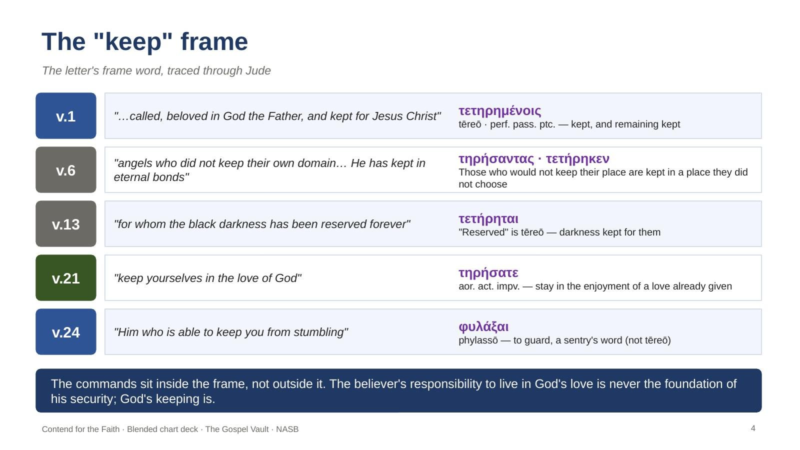
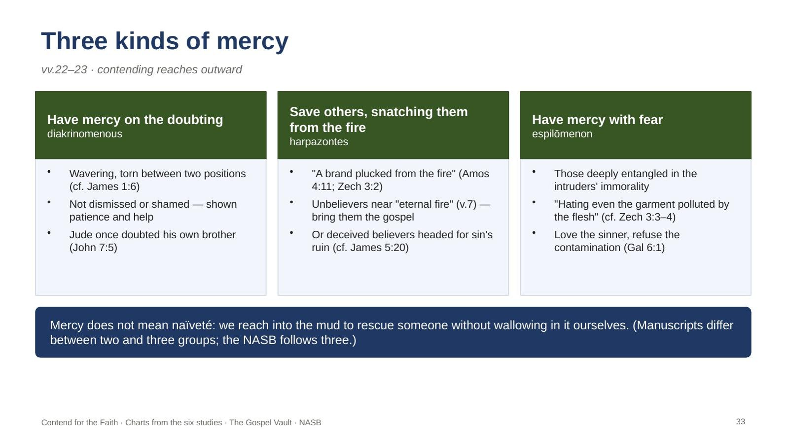
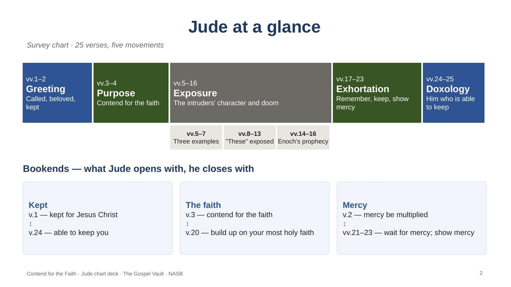

Vault 3 · NT Book Studies · Jude
Three chart decks for leaders teaching the six-part Jude series — Jude’s triads, the “keep” frame, the warnings from history, the portraits of apostasy, and the doxology. Download each as a PDF to read or print, or as an editable PowerPoint to teach from. Every slide carries leader notes.
Start with the Blended deck: it follows the six studies and adds the overview charts. The From the Studies deck keeps strictly to the studies, one section per study. The Overview deck is the shorter first set of twelve charts. Comparison slides show the Reformed reading as a counterpoint and conclude with the Free Grace view held throughout the series.

The charts from all six studies plus the overview charts: Jude at a glance and its bookends, Jude’s triads, the “these” pattern, and a Jude and 2 Peter comparison.

Every chart drawn from the six studies, in study order — one section per study, with notes pointing to the commentary section behind each slide.

A shorter set of twelve charts through the letter: survey, triads, the “keep” bracket, the warnings of verses 5–16, Jude and 2 Peter, and the doxology.